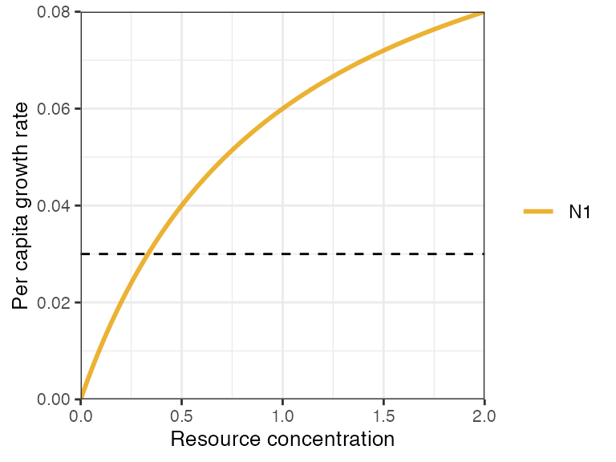
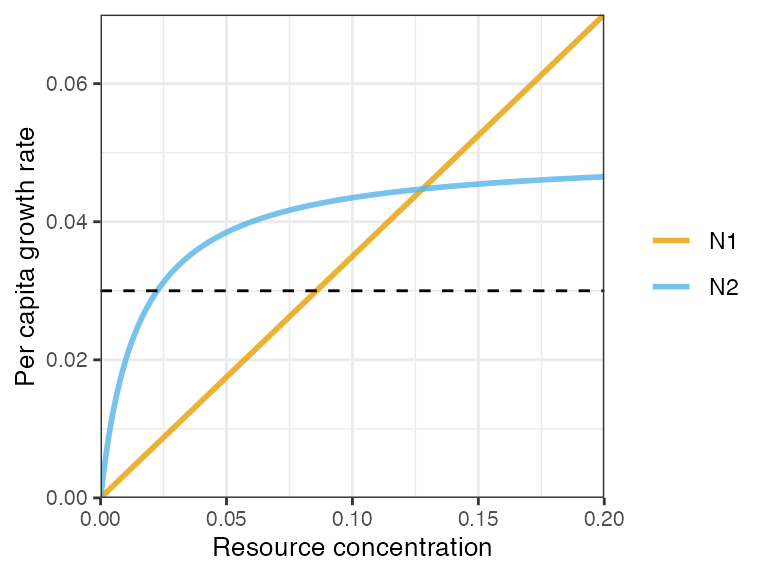
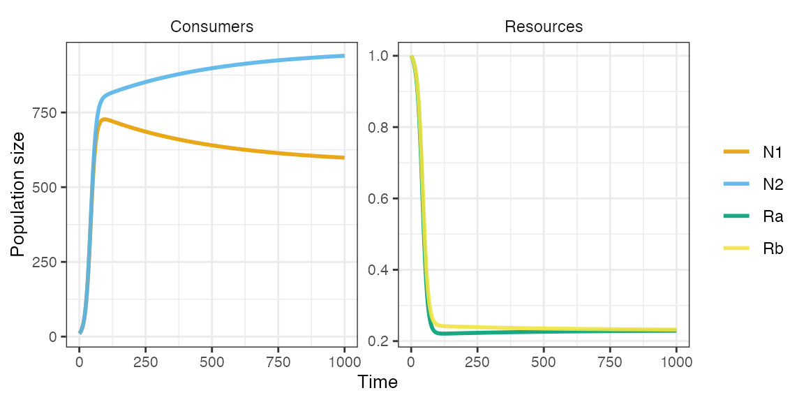
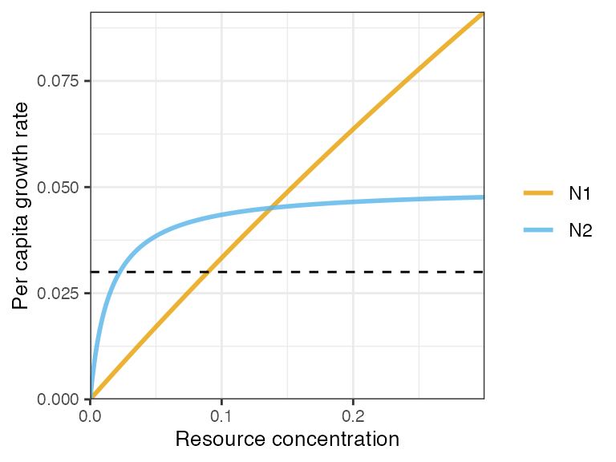
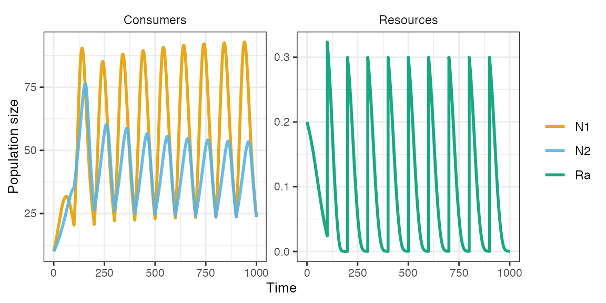
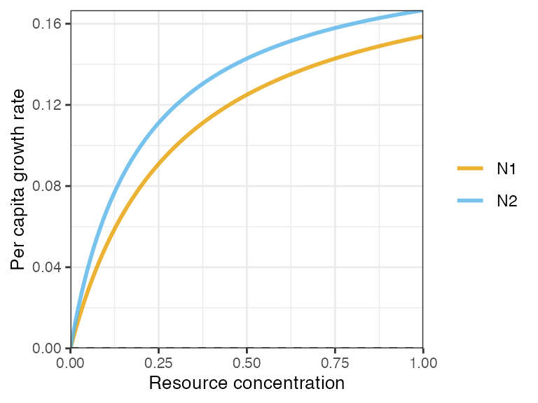
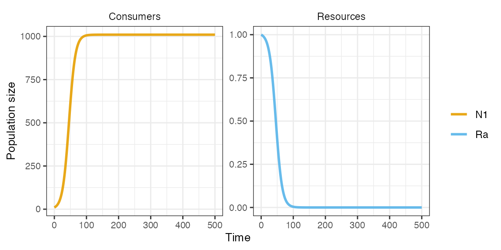
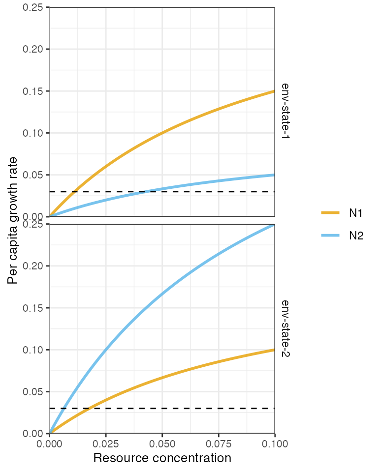

rescomp: An R package for efficient ODE modelling of resource competition
Christopher R. P. Brown, Jan Engelstaedter, and Andrew D. Letten
Source:vignettes/rescomp.Rmd
rescomp.Rmdrescomp is an R package for generating, simulating and visualising ODE models of consumer-resource interactions. In essence, it is a consumer-resource modelling focused interface to the canonical deSolve package.
Model formulation
All rescomp models take the general form,
where is the population density of consumer , is the density/concentration of resource , is the per capita consumer functional response of consumer , is the per capita mortality rate (constant or intermittent), is the resource supply function, and is the resource quota of consumer on resource (the amount of resource per unit consumer).
From this general form, different model formulations are distinguished by: i) the number of consumers/resources; ii) the form of the consumer functional response; iii) the mode of resource supply; iv) the type of resource; and v) any non-autonomous behaviour including time dependent model parameters and/or instantaneous changes in consumer/resource density (e.g. in batch transfer).
Consumer equations
The consumer growth function can take one of three forms:
- linear (type I),
where is a resource consumption constant.

- nonlinear type II (aka Monod)
where is the maximum growth rate and is the half saturation constant for consumer on resource .
- nonlinear type III (sigmoidal),

An alternative parameterisation to all three functional responses is to incorporate a consumption efficiency term, . The type I model becomes , and for type II and III, is substituted for . NB. this functional form is mutually exclusive with the specification of resources quotas in the resource equations, i.e. the s are dropped from the resource equations.
Resource equations
The resource supply function, , can also take several forms. For instance, the resources can be biological and grow logistically,
where is the resource intrinsic rate of increase and is the resource carrying capacity;
Or the resources can be supplied to the systems at a fixed concentration and rate (as in a chemostat),
where represents the flux of resources into and out of the system;
And/or the resources can be pulsed intermittently (e.g., in serial transfer—see examples below).
In the case of multiple resources, each resource is either treated as essential to consumer growth following Leibig’s law of the minimum, in which case,
or substitutable such that:
Using rescomp
The main user function in rescomp is
spec_rescomp(), which facilitates the definition and
parameterisation of a consumer-resource model and the specification of
simulation parameters. Function arguments include (but are not limited
to):
- Number of consumers/resources
- Consumer functional response (type I, II or III)
- Resource dynamic (chemostat, logistic and/or pulsed)
- Resource type (substitutable or essential)
- Continuous or intermittent mortality (e.g., serial transfer)
- Delayed consumer introduction times
- Time dependent growth and consumption parameters
See ?spec_rescomp for all argument options.
Examples demonstrated in this vignette include:
One consumer (type 2) and one logistically growing resource
One consumer (type 2) and one continuously supplied resource (i.e. chemostat)
Two consumers (type 2) and one logistically growing resource
Two consumers (type 1) and two substitutable resources in a chemostat
Two consumers (type 1) and two essential resources in a chemostat
-
Two consumers (type 2) and one externally pulsed resource
- Continuous mortality
- Serial transfer in batch culture (intermittent mortality)
Two consumers (type 2) with time dependent consumption parameters and one continuously supplied resource
Three consumers (type 1) on three essential resources generating an intransitive loop (i.e. rock paper scissors dynamics).
Additional examples illustrating other options and functionality can be found in the vignette “Reproducing studies in resource competition with rescomp”, including delayed consumer introduction times and specifying a model with consumer resource efficiencies rather than resource quotas.
Type 2 consumer on a logistically growing resource
pars <- spec_rescomp(
spnum = 1,
resnum = 1,
funcresp = funcresp_monod(mumax = crmatrix(0.12), ks = crmatrix(1)),
ressupply = ressupply_logistic(r = 3, k = 2),
rinit = 2,
totaltime = 500
)Visualise functional responses with plot_funcresp().
Faceted by resources and time dependent parameterisations (when
relevant).
plot_funcresp(pars, maxx = 2)
The model can then be simulated with sim_rescomp().
sim_rescomp() is a wrapper to deSolve::ode()
that takes the output from spec_rescomp() as its main
argument.
m1 <- sim_rescomp(pars)plot_rescomp() produces a plot of the output dynamics
(both consumers and resources).
plot_rescomp(m1)Note that the total simulation time and initial state variables
specified with spec_rescomp() can be overidden in
sim_recomp() with the arguments totaltime, and
cinit, and rinit, respectively. This will
nevertheless print a message to the console to check it is
intentional.
m1 <- sim_rescomp(pars, totaltime = 200, cinit = 30000)
#> ℹ Overwriting `totaltime` in `pars`.
#> ℹ Overwriting `cinit` in `pars`.
plot_rescomp(m1)
Type 2 consumer on a continuously supplied resource
pars <- spec_rescomp(
spnum = 1,
resnum = 1,
funcresp = funcresp_monod(mumax = crmatrix(0.12), ks = crmatrix(1)),
mort = 0.03,
ressupply = ressupply_chemostat(dilution = 0.03, concentration = 2),
rinit = 2,
totaltime = 300
)
m1 <- sim_rescomp(pars)
plot_rescomp(m1)Two type 2 consumers on a logistically growing resource
pars <- spec_rescomp(
spnum = 2,
resnum = 1,
funcresp = funcresp_monod(
mumax = crmatrix(0.35, 0.05),
ks = crmatrix(1, 0.015)
),
mort = 0.03,
ressupply = ressupply_logistic(r = 1, k = 0.2),
rinit = 0.2,
totaltime = 2000
)
plot_funcresp(pars, maxx = 0.2)
m1 <- sim_rescomp(pars)
plot_rescomp(m1)Owing to the trade-off in functional responses (gleaner-opportunist) and resource fluctuations generated by N2, the two consumers are able to coexist.
Two type 1 consumers and two substitutable resources in a chemostat
pars <- spec_rescomp(
spnum = 2,
resnum = 2,
funcresp = funcresp_type1(crmatrix(
0.09, 0.04,
0.05, 0.08
)),
ressupply = ressupply_chemostat(dilution = 0.03, concentration = 1),
mort = 0.03,
essential = FALSE,
totaltime = 1000
)
plot_funcresp(pars, maxx = 1)
m1 <- sim_rescomp(pars)
plot_rescomp(m1)
Resource partitioning, where each consumer is a better competitor (lower R*) for a different resource, results in coexistence.
Two type 1 consumers and two essential resources in a chemostat
Using pars$essential = TRUE switches the previous
parameteristion to essential resources while keeping all else equal.
pars$essential <- TRUE
m1 <- sim_rescomp(pars)
plot_rescomp(m1)
There is no coexistence now because each species needs to have a larger impact on the resource that is most limiting its growth. For ‘consumer 1’ it is ‘resource b’, whereas for ‘consumer 2’ it is ‘resource a’. We can adjust consumer resource impacts via the resource quota matrix.
pars <- spec_rescomp(
spnum = 2,
resnum = 2,
funcresp = funcresp_type1(crmatrix(
0.09, 0.04,
0.05, 0.08
)),
quota = crmatrix(
0.001, 0.005,
0.005, 0.001
),
ressupply = ressupply_chemostat(dilution = 0.03, concentration = 1),
mort = 0.03,
essential = TRUE
)
m1 <- sim_rescomp(pars)
plot_rescomp(m1)Two type 2 consumers and one externally pulsed resource (continuous mortality)
External resource pulsing is handled using using the events system.
The size of the resource pulse is specified as an argument to
event_res_add(), while the frequency of the resource pulses
is specified using event_schedule_periodic() and its
period argument. To prevent any other mode of resource
supply, ressupply is set to a constant 0 resource
supply.
pars <- spec_rescomp(
spnum = 2,
resnum = 1,
funcresp = funcresp_monod(
mumax = crmatrix(0.7, 0.05),
ks = crmatrix(2, 0.015)
),
ressupply = ressupply_constant(0),
events = list(
event_schedule_periodic(
event_res_add(0.3),
period = 100
)
)
)
plot_funcresp(pars, maxx = 0.3)
m1 <- sim_rescomp(pars)
plot_rescomp(m1)
Two type 2 consumers and one externally pulsed resource (serial transfer with pulsed mortality)
Serial transfer in batch culture differs from the above scenario in that resource pulses are typically accompanied by large instantaneous changes in population density. For example, in a serial transfer experiment with bacteria, an experimenter might sample a fraction (e.g. 10 %) of the community every 24 hours and inoculate that fraction into fresh medium. As such, the consumer population density immediately following a transfer event will be equal to: , where is instantaneous mortality fraction.
Similarly, the resources/medium is fractionally sampled, such that immediately after a transfer event the resource concentration will be equal to: , where is the resource concentration prior to transfer, and is the resource concentration in the fresh medium.
The event_batch_transfer() function handles changes in
both consumer and resource concentrations from a batch transfer event:
dilution is the transfer fraction,
,
and resources is the concentration of resources in the
fresh medium,
.
As for the previous example, we set the resource supply to zero, such
that all resource input comes from the batch transfer events. In this
case, we also set mort to zero, so that all consumer
mortality is also provided by the batch transfer events.
pars <- spec_rescomp(
spnum = 2,
resnum = 1,
funcresp = funcresp_monod(
mumax = crmatrix(0.2, 0.2),
ks = crmatrix(0.3, 0.2)
),
ressupply = ressupply_constant(0),
mort = 0,
events = list(
event_schedule_periodic(
event_batch_transfer(dilution = 0.2, resources = 1),
period = 100
)
),
rinit = 0.6
)
plot_funcresp(pars, maxx = 1)
m1 <- sim_rescomp(pars)
plot_rescomp(m1)Note, to reproduce the dynamics of a single batch culture experiment
(i.e. without serial transfer) as potentially measured via optical
density in a plate reader (negligible or unobserved mortality), simply
set both resspeed and mort to zero.
pars <- spec_rescomp(ressupply = ressupply_constant(0), mort = 0, totaltime = 500)
m1 <- sim_rescomp(pars)
plot_rescomp(m1)
Two type 2 consumers with time dependent consumption parameters and one continuously supplied resource
Using time dependent consumption parameters is appropriate for capturing basic consumer-environment interactions (e.g. differential responses to temperature, pH, antibiotics etc.). Time varying parameters can be implemented with forcing functions. rescomp provides a convenient means of implementing forcing functions.
To do this, firstly, one or more time-dependent parameter must be
defined, given in a rescomp_param_list() to the
params argument of spec_rescomp(). The way in
which the parameter changes over time may be defined using a variety of
helper functions, such as rescomp_param_sine(),
rescomp_param_triangle(), or
rescomp_param_square() (different types of periodic
variation). Secondly, some parameters of the model, such as the
and
of the functional response, must be made depedent upon the
time-dependent parameters: this will most commonly be done using the
rescomp_coefs_lerp() function, which linerarly interpolates
the parameter values depending on the value of the time-dependent
parameter.
pars <- spec_rescomp(
spnum = 2,
resnum = 1,
funcresp = funcresp_monod(
mumax = rescomp_coefs_lerp(
crmatrix(0.2, 0.5),
crmatrix(0.3, 0.1),
"env_state"
),
ks = crmatrix(0.1)
),
params = rescomp_param_list(
env_state = rescomp_param_square(period = 100)
),
ressupply = ressupply_chemostat(dilution = 0.03, concentration = 0.1),
rinit = 0.1,
mort = 0.03,
totaltime = 2000
)
plot_funcresp(pars, maxx = max(pars$rinit))
m1 <- sim_rescomp(pars)
plot_rescomp(m1)The two consumers coexist due species-specific environmental responses leading to a temporal storage effect.
Three type 1 consumers on three essential resources generating an intransitive loop (i.e. rock paper scissors dynamics).
pars <- spec_rescomp(
spnum = 3,
resnum = 3,
funcresp = funcresp_type1(crmatrix(
0.11, 0.07, 0.045,
0.05, 0.11, 0.07,
0.07, 0.047, 0.1
)),
quota = crmatrix(
0.2, 0.7, 0.4,
0.4, 0.2, 0.7,
0.7, 0.4, 0.2
),
ressupply = ressupply_logistic(r = 10, k = 0.5),
rinit = 0.5,
mort = 0.015,
essential = TRUE,
totaltime = 2000
)
plot_funcresp(pars, maxx = max(pars$rinit))
m1 <- sim_rescomp(pars)
plot_rescomp(m1)